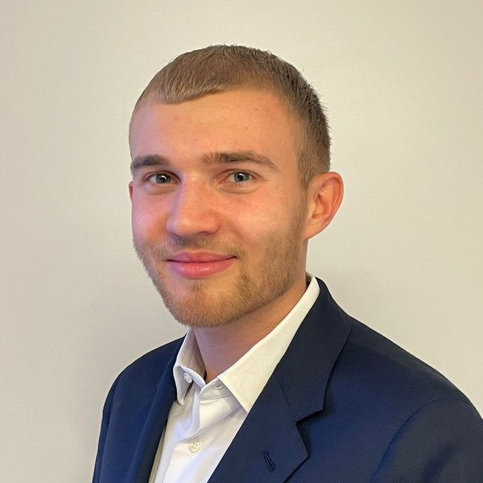
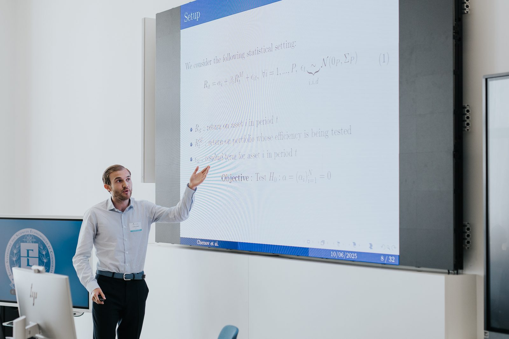

Teaching Assistant, EPFL Master in Financial Engineering2023 – present
Stochastic Calculus · Machine Learning in Finance
Best Teaching Assistant Award 2026, by student vote

PhD candidate in Machine Learning applied to Finance
EPFL · Lausanne, Switzerland
I am a PhD candidate in Machine Learning applied to Finance at EPFL, advised by Prof. Semyon Malamud (Swiss Finance Institute). My research focuses on point-in-time large language models (models trained only on text available at each date, so they are free of lookahead bias), as well as random matrix theory and kernel methods. We train these models on 128 GPUs in parallel at the Swiss National Supercomputing Centre (CSCS).
Before my PhD, I worked as a quantitative analyst at Taranis, a hedge fund in Geneva, and in asset management at Vaudoise Assurances. I hold an MSc in Financial Engineering from EPFL, where I received the Swiss Life Award for the highest GPA of my graduating class, and a BSc in Economics from the University of Lausanne.
Outside research, I play football in the 4th division of the Swiss Football League, play the piano and enjoy pastry-making.
Shows that training decoder-only transformers of up to 4B parameters on 1T chronologically filtered tokens largely closes the performance gap between lookahead-free language models and their unconstrained counterparts.
Proposes optimizing the neural tangent kernel explicitly rather than implicitly through gradient descent, yielding kernels that match or outperform the deep networks they are derived from.
Extends the Gibbons–Ross–Shanken test to settings where test assets far outnumber the sample, using random matrix theory to correct the bias induced by regularized covariance estimation.

Stochastic Calculus · Machine Learning in Finance
Best Teaching Assistant Award 2026, by student vote
Algorithms and Computational Thinking (School of Criminal Justice, 2020)
Business Intelligence and Analytics (HEC Lausanne, 2019)
Statistics and Econometrics I (HEC Lausanne, 2019)
Backtesting infrastructure for option-based strategies, statistical analysis of trading signals and an automated trading system.
Calibration of an option-based portfolio insurance strategy and Python tools for pricing, backtesting and reporting.
Advisor: Prof. Semyon Malamud
GPA 5.8/6 · Swiss Life Award for the highest GPA
GPA 5.6/6